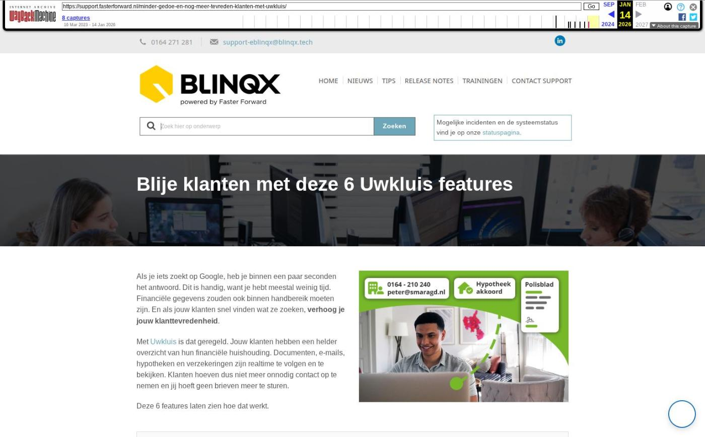

Blije klanten met deze 6 Uwkluis features

Tekstinhoud
Title: Blije klanten met deze 6 Uwkluis features | Support
URL: https://web.archive.org/web/20260114021110/https://support.fasterforward.nl/minder-gedoe-en-nog-meer-tevreden-klanten-met-uwkluis/
Source element: <article>
---
Als je iets zoekt op Google, heb je binnen een paar seconden het antwoord. Dit is handig, want je hebt meestal weinig tijd. Financiële gegevens zouden ook binnen handbereik moeten zijn. En als jouw klanten snel vinden wat ze zoeken, verhoog je jouw klanttevredenheid.
Met Uwkluis is dat geregeld. Jouw klanten hebben een helder overzicht van hun financiële huishouding. Documenten, e-mails, hypotheken en verzekeringen zijn realtime te volgen en te bekijken. Klanten hoeven dus niet meer onnodig contact op te nemen en jij hoeft geen brieven meer te sturen.
Deze 6 features laten zien hoe dat werkt.
Eenvoudig documenten delen
E-mails en registraties tonen
Polissen en dekkingen inzichtelijk
Klant weet hoe hij jou kan bereiken
Correspondentie adres getoond
Producten en diensten altijd up-to-date
En nog veel meer!
Meer weten over uwkluis?
Eenvoudig documenten delen
Wil je een adviesrapport of polisblad veilig delen met je klant? In Elements kies je de documenten die de klant vervolgens altijd kan bekijken in uwkluis.
E-mails en registraties tonen
Wil je het gespreksverslag of een e-mail van de maatschappij delen met je klant? Maak deze dan zichtbaar in Uwkluis. Zo hoeven klanten minder vaak te bellen om vragen te stellen.
Je kunt hiermee ook klanten in één klik informeren over oversluiten en besparen. Zo beheer je klanten moeiteloos.
Polissen en dekkingen inzichtelijk
Je hoeft geen postzegels meer te plakken. Polisbladen van de verzekeringen van de klant maak je in één klik inzichtelijk. Daarnaast ziet de klant ook zijn volledige pakketten, polissen en dekkingen.
Klant weet hoe hij jou kan bereiken
De klant ziet in uwkluis nu precies hoe hij contact met jou op kan nemen. Het adres, algemene e-mailadres, telefoonnummer, openingstijden van jouw kantoor worden namelijk getoond.
Correspondentie adres getoond
Jouw klant ziet nu het juiste adres in zijn Uwkluis omgeving. Het correspondentieadres van zijn klantdossier wordt namelijk getoond in Uwkluis, in plaats van het adres van de onderpand van de hypotheek.
Producten en diensten altijd up-to-date
De producten en diensten van jouw klanten zijn nu altijd actueel in Uwkluis. Bij een aanpassing in het klantdossier in Elements worden deze namelijk ook direct aangepast in Uwkluis. Dit gebeurt bij het toevoegen, wijzigen of verwijderen van een persoon, dienst, contract, levens- of schadeverzekering of hypotheek.
En nog veel meer!
Uwkluis is een moderne versie van de Digimap. Zo geef je jouw advieskantoor de professionele uitstraling die het verdient.
Meer weten over uwkluis?
Vul onderstaand contactformulier in en De Nationale Hypotheekbond neemt zo snel mogelijk contact met je op om de mogelijkheden van uwkluis te laten zien.
Voor- en achternaam
Elements URL (bedrijfsnaam.fasterforwardelements.nl)
Je e-mailadres
Telefoonnummer (optioneel)
In dit artikel lees je in detail hoe je uwkluis vervolgens kunt gaan gebruiken.
Geplaatst op 31 januari 2023 (Laatste update: 15 augustus 2023)